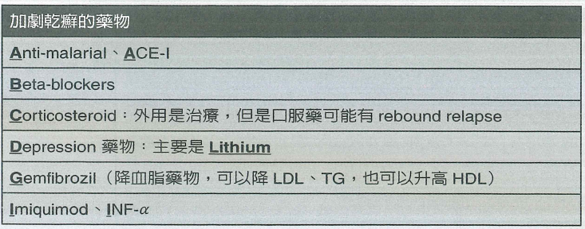

- 機轉慢性反覆發作之皮膚病
- 角質細胞的細胞週期縮短由原來的311小時縮短為36小時造成棘皮層增生 acanthosis表皮增生為正常的28倍
- 同時由於第一型輔助型T細胞Th1免疫反應在真皮產生了發炎現象許多發炎細胞圍繞在表皮和真皮血管周圍在顯微鏡下可見其形成的微小膿疱稱Munro's microabscess
- 流行病學
- 發病期分別為23歲和55歲兩個高峰期越早發作症狀越嚴重且持續越久。台灣男性平均出現於35.5歲而女性為30.4歲
- 男女發生率相等少見於西非、日本人、北美南美印地安人和愛斯基摩人
- 越往赤道發生率越低陽光越充足越不易乾癬
- 遺傳性
- 雙親其中一個有乾癬小孩乾癬機率10%
- 雙親都有乾癬小孩乾癬機率40%
- 基因型以HLA-Cw6確定最相關其他如HLA-B13、B17、B27、Bw57也有相關
- 分類
- Type 1好發在40歲前與HLA 相關有家族遺傳
- Type 2好發40歲以後且與HLA 無關
- 病因多基因遺傳+Trigger factor
- 危險因子
- 家族史
- 抽菸、肥胖
- 觸發因子[口訣TIDES]
- 外傷TraumaKoebner phenomenon外傷、抓搔皮膚會促進乾癬的增生30-50%的病患有此現象
- 感染Infection
- 急性滴狀乾癬guttate psoriasis通常出現在急性鏈球菌GAS感染後1-2週
- HIV、S.aureus也與乾癬加劇相關
- 藥物Drug會造成發病或惡化[口訣ABCD+GI]
- 環境、壓力Environment、Emotion約40%的病患會因壓力使乾癬惡化小孩更高達90%
- 光照Sunlight照光治療UVB為治療之一、但過度日曬反而會加劇乾癬
- 酒精可能會誘發乾癬但證據未明
- 好發位置頭皮、軀幹含腹股溝、手肘、膝蓋、手掌/腳掌多為對稱性
- Extensor side居多
- 臨床表現
- 乾癬界線清楚明顯表面有鬆散銀屑皮屑下為滑亮均質之紅斑
- Auspitz sign用機械性方式移去皮屑後會在紅色表皮上出現小血滴真皮乳頭處擴張之小血管破裂
- Koebner phenomenonisomorphic phenomenon 同形現象外傷、抓搔皮膚會誘發乾癬形成與增生
- Psoriatic arthritis10~25％有相當比例的乾癬會造成關節炎與皮膚病灶嚴重度無關可出現在皮膚上未出現乾癬的病患上。另外50%的病人手指甲及35% 病人的腳趾甲會被侵犯產生指甲凹陷、黃斑、嚴重變形常被誤認為黴菌感染
- Pencil-in-cup deformity
- 指甲表現
- Psoriasis pitting最常見的指甲病變為甲板的凹陷代表該段甲板生長過程中受到影響反應了乾癬疾病的活躍程度也與乾癬關節病變的嚴重程度有相關性
- Onycholysis甲板與甲床分離會由遠端發展至近端可能會形成一個空間而發生眞菌感染。也可見於指甲受傷患者、免疫不全患者及甲狀腺疾者
- Subungual hyperkeratosis甲床的角質細胞過度分化而形成角質堆積於甲板下方 主要發生在腳趾甲
- Oil drop salmon patch指甲觀察到一塊半透明黃紅色的病灶 意即甲床發生乾蘚的皮膚病變。是乾癬的pathognomonic sign有高度專一性
- 共病增加以下疾病機率
- 心肌梗塞
- 中風
- 高血壓、糖尿病、血脂異常
- 肥胖、代謝症候群
- 診斷
- 臨床亞型
- 尋常性乾癬Psoriasis vulgaris
- 最常見好發四肢伸側手肘、膝蓋和頭皮特別是耳後
- 界線清楚的紅斑+病灶處的脫屑
- 地圖狀geographic乾癬融合成大塊如地圖板塊狀
- 反轉inverse、flexural乾癬皮膚皺摺處表面不脫屑而成光滑的紅斑
- 點滴狀乾癬Guttate psoriasis
- 許多橙紅色salmon pink的點滴狀病灶出現在軀幹上部和四肢近端直徑1cm
- 多見於年輕人和感染鏈球菌後發生
- 乾癬性紅皮症Psoriatic erythroderma
- 突然全身皮膚發紅、大量脫屑
- 或由慢性尋常性乾癬慢慢進展成全身性脫屑性紅斑
- 全身膿疱型乾癬Generalized pustular psoriasis von Zumbusch
- 急性乾癬
- 突發性全身黃色無菌性的膿疱 多合併持續性發燒
- 較嚴重時膿疱會融合而成更大圓形膿疱circinate lesion or lakes of pus
- 膿疱型乾癬Pustular psoriasis和HLA-B27高度相關
- 掌瓶膿疱症Palmoplantar pustulosis在掌心及腳底產生反覆的膿疱
- 大多數和抽菸有關
- 連續性肢端皮膚炎Acrodermatitis continua在指甲周圍化膿甚至使指甲破壞消失
- 處置
- 平日作息
- 避免感染避免外傷勿用力搔抓皮膚或皮屑
- 停止引起乾癬藥物的使用
- 避免長期暴露在低溫、低濕度的環境
- 睡眠充足、保持情緒平穩
- 外用
- 類固醇TOPI 類固醇可抗發炎和抗增生但無法使皮膚完全正常化
- Anthralin目前國內停產效果好且治癒後維持較久無任何長期副作用但皮膚刺激性較強
- tazarotene
- 維生素D抑制角質細胞增生並促進其分化並有抗發炎作用
- 焦油此法治療乾癬已有很長的歷史使用2〜5%的焦油作為輔助性治療具輕度刺激性長期無嚴重副作用
- 紫外線療法
- 光化學療法PUVA 口服MethoxypsoralenP+UVA照射
- 口服藥物1~2小時後開始照射依皮膚反應而逐漸加量
- 一個禮拜兩到三次
- 大部份病人在治療19-25次之後病灶會漸消褪
- 副作用包括了噁心、頭暈和頭痛
- 浸泡式光化學療法PUVA soaks利用泡澡將Methoxypsoralen送到皮膚
- 主要優點是沒有全身性的作用如腸胃道不適
- 中波紫外線光療UVB使用窄頻narrow-band 311nmUVB
- UVB在皮膚可抑制免疫細胞功能減少白血球附著到微血管誘使皮膚製造抗發炎的物質
- 全身性治療後線治療
- Methotrexate MTX慢性塊狀乾癬或乾癬性關節炎的第一線用藥
- 最常見的副作用噁心、疲倦、食慾減退、骨髓抑制造成白血球下降
- 肝毒性有肝病史和酗酒不適合可能引發肝纖維化或肝硬化的危險
- 環袍黴素cyclosporine
- 主要治其他治療無效或乾癬性紅皮症可快速達到療效不適合長期使用
- 給予低劑量 5 mg/kg/day時 約對70%的慢性板塊狀乾癬有效
- 主要副作用高血壓、高血脂、多毛症、牙皺增生、不可逆腎功能損害
- 口服A酸對全身膿疱型及掌號膿疱症效果好但對於其他類型乾癬單 獨使用效果不佳故須搭配光照療法
- 生物製劑
- Infliximab、AdalimumabTNF單株抗體
- EtanerceptTNF-α受體融合蛋白
- Ustekinumab針對IL-12和IL-23的單株抗體
- Alefacep作用於 CD2
 相關條目關節炎
相關條目關節炎



 勿使用PO 類固醇因使用一段時間後停藥會rebound
phenomenon造成全身性膿疱型乾癬
勿使用PO 類固醇因使用一段時間後停藥會rebound
phenomenon造成全身性膿疱型乾癬